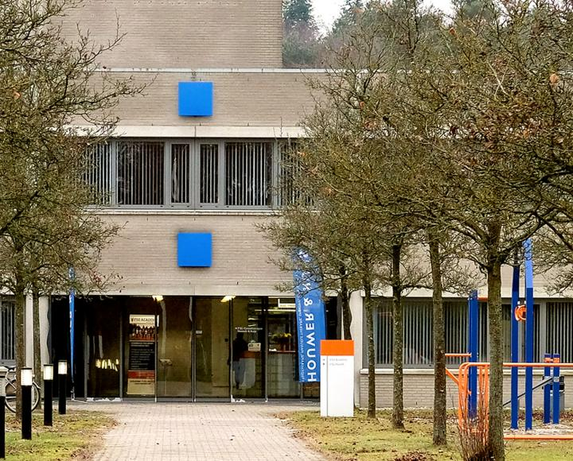
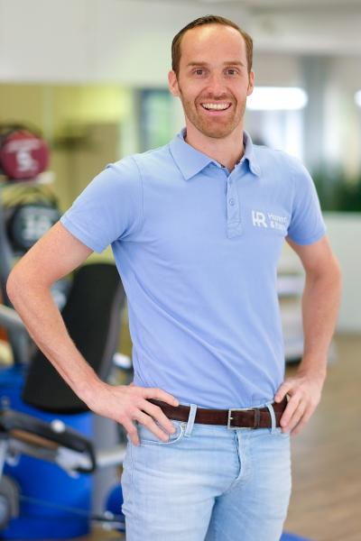
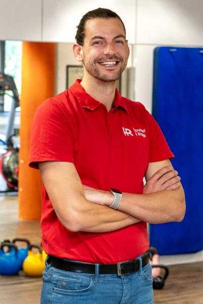
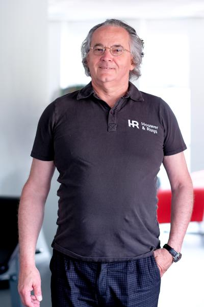
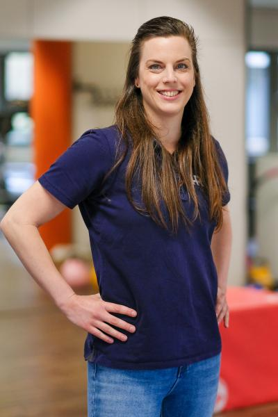
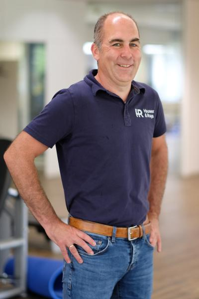
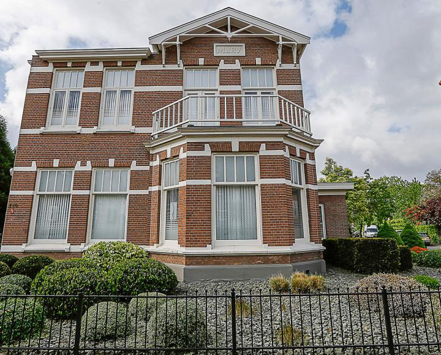
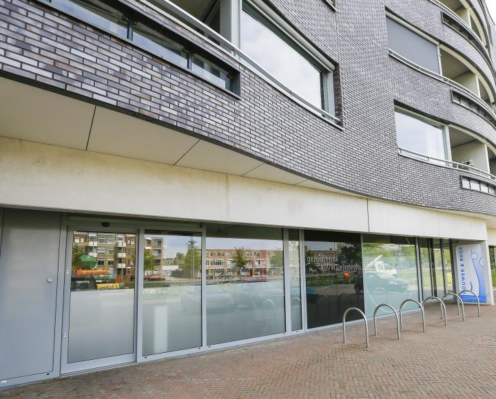

Laan van Westenenk
FSG Health, Laan van Westenenk 4
7336 AZ Apeldoorn, bij Ugchelen
- ma t/m do
- 8.00 tot 21.00
- vrijdag
- 8.00 tot 18.00
Fysiotherapie, manuele therapie en training op drie plekken in Apeldoorn. Samen met u zoeken we de balans tussen wat uw lichaam moet doen en wat het aankan.
Telefonisch bereikbaar ma t/m vr van 8.00 tot 14.00 uur.



De kans is groot dat wij uw klacht vaak zien. Zoveel mensen behandelden onze collega's in 2024.
Niet zeker welke behandeling bij u past? Dat bepalen we samen bij de intake. Uw hulpvraag staat daarbij centraal.
Intake aanvragenAls team fysiotherapeuten staan wij voor ons vak. We werken veel samen, met elkaar en met huisartsen, verloskundigen, bedrijven en sportverenigingen. Zo komt u bij de therapeut die bij uw klacht past.






"Wat een fantastische fysiotherapeut. Ik heb (op indicatie) een jaar na mijn ziekten mogen revalideren. Super begeleiding door Robert en Liesbeth. Voel me weer topfit! Heel, heel hartelijk bedankt!!"
"Behoorlijk last van mijn rechter knie gehad tijdens het fietsen. Na een paar goede en leuke behandelingen door Wouter L van mijn klachten af. Vakkundige en leuke vent. Bedankt, Ernest"
Laat uw gegevens achter en we bellen u terug. We nemen binnen één werkdag contact met u op.
Liever direct bellen?
055 360 5681
ma t/m vr, 8.00 tot 14.00 uur
Een vraag per mail: info@houwerenruijs.nl
Heeft u een aanvullende verzekering? Dan worden fysiotherapie en manuele therapie meestal geheel of gedeeltelijk vergoed. We hebben dit jaar met alle zorgverzekeraars een contract, dus de nota gaat rechtstreeks naar uw verzekeraar.
Hoeveel behandelingen u nog over heeft, kunt u het beste navragen bij uw zorgverzekeraar. Dat mogen wij vanwege de privacywet niet inzien.
Kunt u niet komen? Zeg uw afspraak minimaal 24 uur van tevoren af. Een niet nagekomen of te laat afgezegde afspraak kost € 38,00.

FSG Health, Laan van Westenenk 4
7336 AZ Apeldoorn, bij Ugchelen

Deventerstraat 120
7321 CD Apeldoorn

Gezondheidscentrum Welgelegen
Baron Sloetkade 109, 7321 ZR Apeldoorn
Betaald parkeren tussen 10.00 en 15.00 uur met de pinpas.
Route plannen